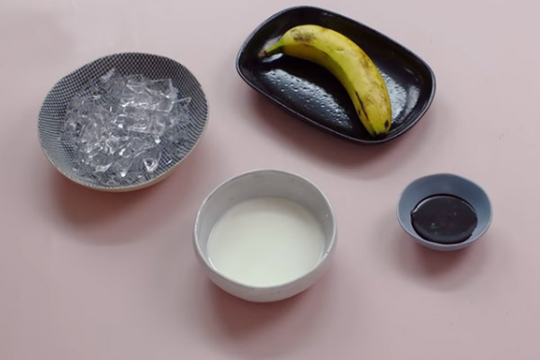

Sinh tố chuối socola có độ ngọt tự nhiên của socola xen lẫn vị chuối nhẹ nhàng, mang lại cảm giác dễ chịu khi uống và không bị ngọt gắt. Hơn nữa, sinh tố chuối socola là “liều thuốc” dưỡng cơ cực kỳ tốt cho những ai đang tập gym, muốn giảm cân và săn chắc cơ đấy! Cùng tìm hiểu công thức và pha sinh tố ngon này ngay thôi.
Chuối: 1 quả
Sốt socola: 30ml = 1oz
Sữa tươi: 70ml = 2.3 oz
Đá viên
Sơ chế nguyên liệu
Đầu tiên, chuối cắt thành từng miếng, sau đó áo qua nước đường cát để chuối không bị thâm đen, ảnh hưởng đến màu sinh tố. Ngoài ra, cách này bạn có thể áp dụng để bảo quản trái cây tươi khi mở quán bán sinh tố đấy.
Chuẩn bị đầy đủ các nguyên liệu pha chế sinh tố socola chuối gồm: sốt socola, sữa tươi, đá viên. Tùy thuộc vào khẩu vị, bạn có thể điều chỉnh các nguyên liệu này sao cho hợp lý.
Cách xay sinh tố chuối socola
Bạn nên sử dụng cối xay đã vệ sinh sạch sẽ, được lau khô hoàn toàn tránh ảnh hưởng đến thành phẩm sinh tố dễ bị tách nước nhé.
Bước tiếp theo, cho lần lượt các nguyên liệu trên vào cối xay sinh tố và xay nhuyễn hỗn hợp là hoàn thành xong các bước làm sinh tố socola chuối ngon miệng.
Uống sinh tố socola chuối có tăng cân không?
Có lẽ, nhiều người rất băn khoăn khi uống sinh tố socola chuối sẽ tăng cân vì có socola, sữa tươi. Thế nhưng, một tin mừng cho các tín đồ thèm ngọt nhưng trong chế độ ăn kiêng rằng, sinh tố socola chuối có hàm lượng calories hợp lý cho cả người gầy và người dễ tăng cân.
Một số lưu ý khi làm sinh tố chuối socola
Các bạn nên sử dụng sốt socola uy tín, đảm bảo chất lượng để pha chế. Đồng thời bạn nên sử dụng sốt socola nâu để kết hợp với sinh tố chuối có màu vàng nhạt, tạo ra màu sinh tố hài hòa, đẹp mắt hơn.
Chỉ sử dụng những quả chuối đã chín, không bị úng hoặc có mùi để xay sinh tố chuối socola.
Các loại trái cây có thể kết hợp với chuối như: Sinh tố chuối đu đủ, sinh tố chuối dâu tây, sinh tố chuối dứa, sinh tố chuối bơ, sinh tố chuối và sữa chua…